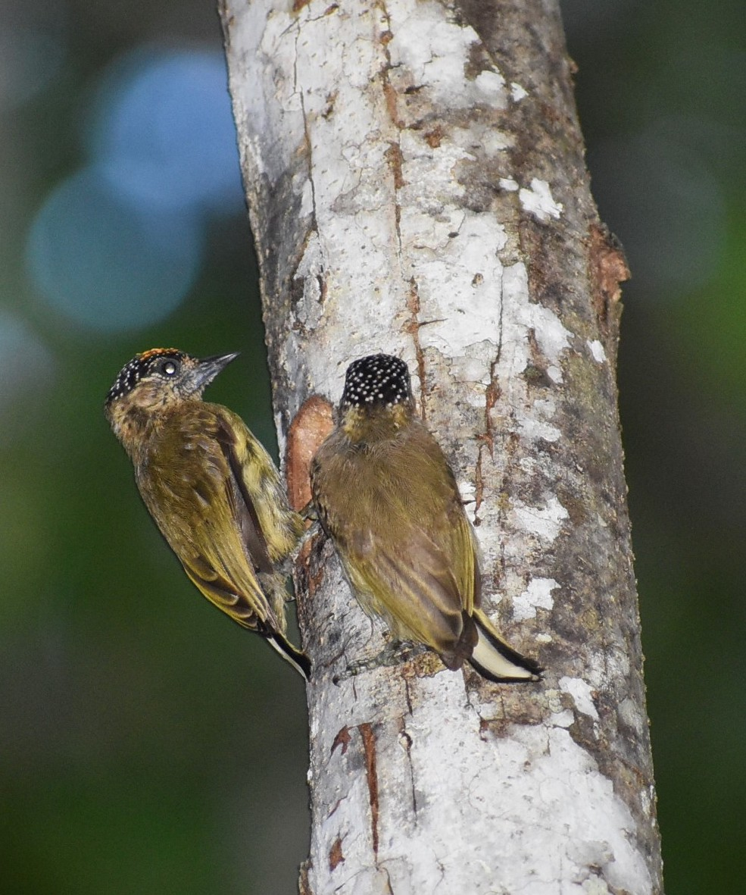
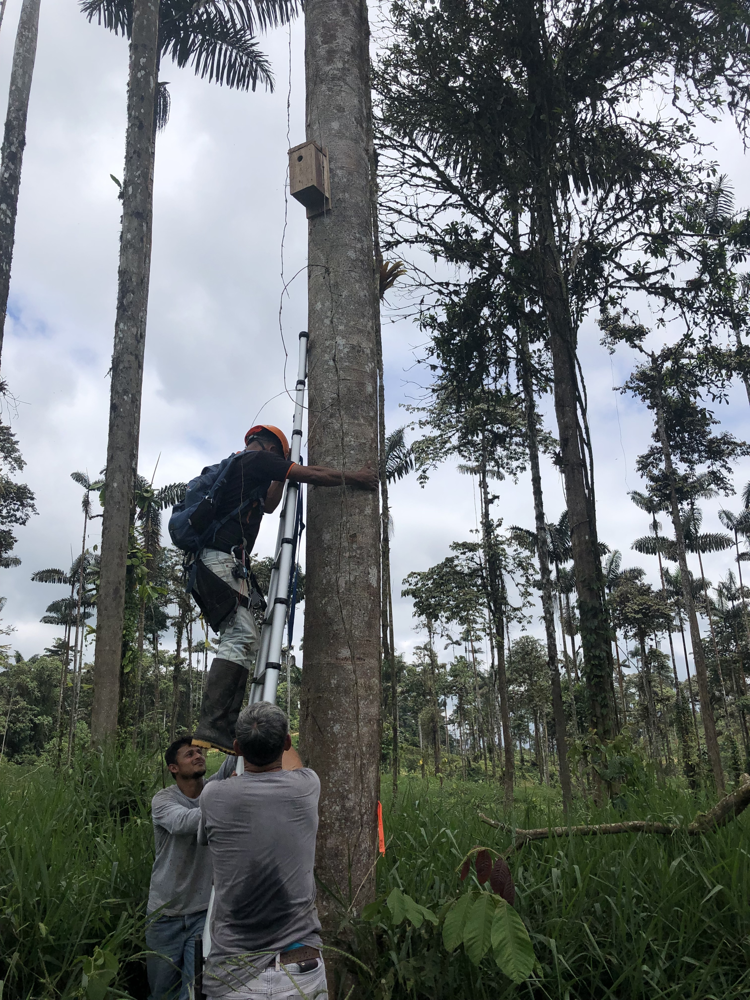
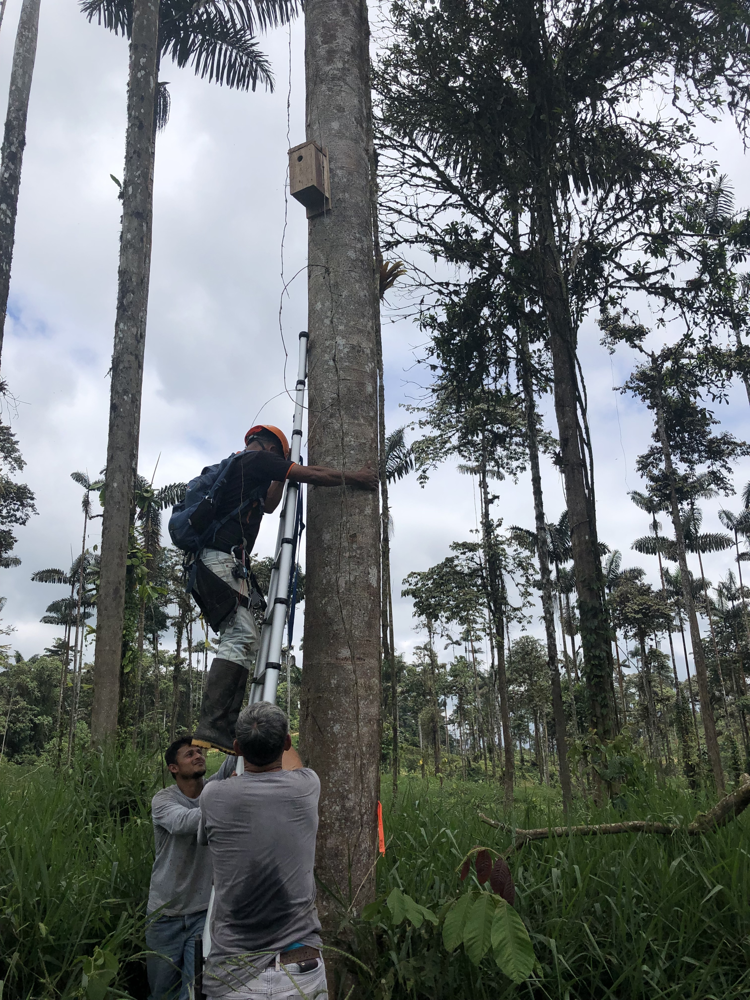

Research
How do climate and land-use change shape wildlife communities?

Trait-based predictions of species’ vulnerability
It is critical to understand which species are most vulnerable to climate and land-use change in order to prevent biodiversity loss and design forward-looking conservation strategies. To contribute to this understanding, I set up a study system in 2018 in 12 farms and adjacent forests along a precipitation gradient in the Magdalena River Valley, Colombia. I sampled birds and measured vegetation structure at 144 total sites to measure the effects of both climate and land-use. This year (2019), we will obtain an additional year of data at the same sites. We will use the bird communities along with species traits to identify which characteristics make species most vulnerable to global changes. Then, we will use a comparable study system in Costa Rica to see if (1) there are large-scale patterns in the species traits that confer resilience or vulnerability to climate and land-use change, and (2) if models predicting community assemblages are transferable across countries. We hope to help understand how to conserve threatened species while creating a model that predicts unobserved species abundances based on species traits and environmental factors. See more about my summer adventures here.
Trait-based predictions of species’ vulnerability
It is critical to understand which species are most vulnerable to climate and land-use change in order to prevent biodiversity loss and design forward-looking conservation strategies. To contribute to this understanding, I set up a study system in 2018 in 12 farms and adjacent forests along a precipitation gradient in the Magdalena River Valley, Colombia. I sampled birds and measured vegetation structure at 144 total sites to measure the effects of both climate and land-use. This year (2019), we will obtain an additional year of data at the same sites. We will use the bird communities along with species traits to identify which characteristics make species most vulnerable to global changes. Then, we will use a comparable study system in Costa Rica to see if (1) there are large-scale patterns in the species traits that confer resilience or vulnerability to climate and land-use change, and (2) if models predicting community assemblages are transferable across countries. We hope to help understand how to conserve threatened species while creating a model that predicts unobserved species abundances based on species traits and environmental factors. See more about my summer adventures here.
Is agriculture a sink habitat?
Many researchers have shown that agricultural landscapes may contribute to biodiversity conservation because many species are detected in agriculture. However, it is less clear whether farmland constitutes high quality habitat where individuals can obtain the resources to sustain populations over the long term. Alternatively, farmland may be poor habitat (“sink habitat”), drawing animals out from better habitat but not enabling sufficient reproduction for populations to persist. If agriculture is a sink habitat, then biologists may be overestimating the ability of many species to persist in agricultural landscapes. Understanding the mechanisms through which agriculture affects the fitness and life history of wildlife is thus critical to understanding population dynamics, and in turn, to designing management strategies to promote biodiversity. Unfortunately, source-sink dynamics are poorly studied— especially in the tropics— limiting our understanding of the relative merits of conservation in agricultural versus natural landscapes. To this end, I have two research projects to measure how agriculture may affect individuals.

How birds use agricultural habitats
The way species use their surrounding habitat likely changes between varying amounts of forest cover, which is not captured by studies solely documenting biodiversity. For example, if birds observed in farmland are only transiting through it, their presence may not indicate that the farmland is beneficial for their conservation. Alternatively, if birds use farmland for food and nesting material, improving farmland habitat by planting live fences or hedgerows, for example, could further benefit bird conservation. Therefore, understanding how species use agriculture is critical for designing wildlife-friendly management strategies and promoting biodiversity in working landscapes. I will use observations of bird behavior in forest and agriculture in Costa Rica to determine whether species shift their behaviors between forest and agriculture. Additionally, I will incorporate behavior into the detection probability of individuals in statistical modeling.
 

Does nesting habitat limit cavity-nesting birds in tropical agricultural landscapes?
One group of species that is particularly threatened by land-use change is cavity-nesting birds, which depend on tree cavities to breed and roost. The highest diversity of cavity-nesters in the Neotropics (678 species), and cavity-nesters play important roles in ecosystems by dispersing seeds, pollinating plants, and controlling pests. However, it is unknown whether cavity-nesters are limited by nesting habitat or other factors (e.g. food, predation) in agricultural landscapes. To understand whether agriculture is a sink habitat for Neotropical cavity-nesting birds, I conducted a nest box addition experiment and measured cavity availability in farms and forests in Ecuador. Simultaneously, this experiment will test the efficacy of artificial cavities as a solution to cavity limitation. To our knowledge, this is the first nest box experiment in tropical croplands, which make up a large proportion of the world’s land area.
Does nesting habitat limit cavity-nesting birds in tropical agricultural landscapes?
One group of species that is particularly threatened by land-use change is cavity-nesting birds, which depend on tree cavities to breed and roost. The highest diversity of cavity-nesters in the Neotropics (678 species), and cavity-nesters play important roles in ecosystems by dispersing seeds, pollinating plants, and controlling pests. However, it is unknown whether cavity-nesters are limited by nesting habitat or other factors (e.g. food, predation) in agricultural landscapes. To understand whether agriculture is a sink habitat for Neotropical cavity-nesting birds, I conducted a nest box addition experiment and measured cavity availability in farms and forests in Ecuador. Simultaneously, this experiment will test the efficacy of artificial cavities as a solution to cavity limitation. To our knowledge, this is the first nest box experiment in tropical croplands, which make up a large proportion of the world’s land area.